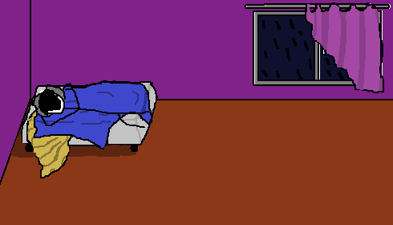
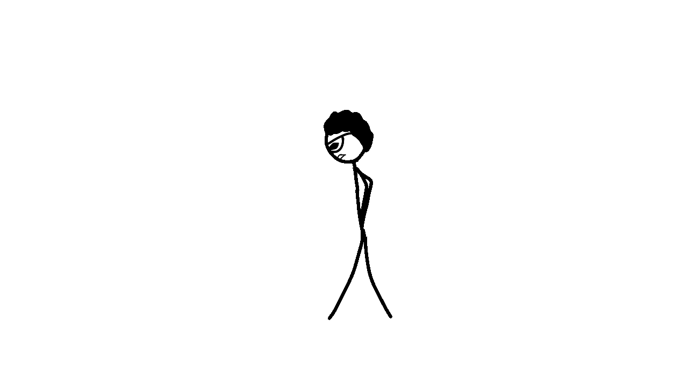

BIENVENIDO A LA SECCION DE BLOGS!
¡Bienvenido a nuestro blog! En esta sección, exploramos el fascinante mundo del queso a través de artículos interesantes. Desde historias sobre nuestros productores locales hasta tendencias en la gastronomía, aquí encontrarás contenido que te informará y te inspirará.
Y por que deberias probar nuestros quesos? Simple! porque te levantan el animo por su excelente
sabor y calidad! O sino, preguntenle a David!
David antes de probar nuestros quesos:

David despues de probar nuestros quesos:
